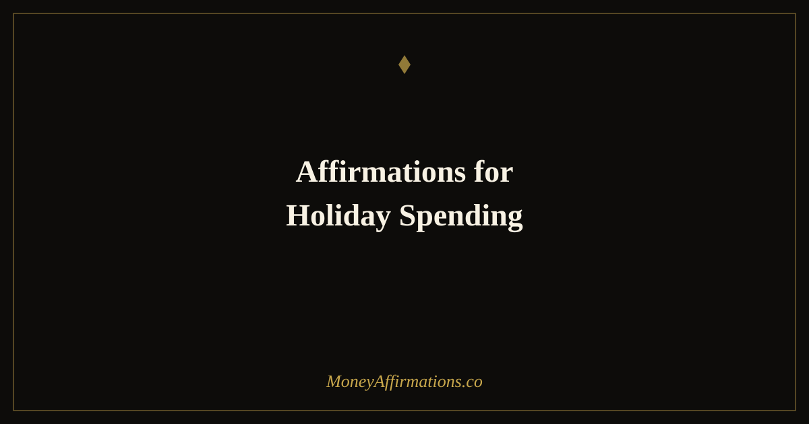

50 Affirmations for Holiday Spending to Give Generously Without Financial Stress

The holiday season is one of the most financially and emotionally charged periods of the year — and the two are deeply intertwined. The pressure to give generously collides with the reality of what is actually in the account. Family expectations arrive alongside marketing that makes it genuinely difficult to distinguish between wanting to show love and wanting to avoid the discomfort of looking like you cannot keep up. For many people, the result is spending they cannot afford, followed by a January of financial recovery and lingering guilt.
These 50 affirmations are designed to support you across the entire holiday arc: from the intentional planning of your budget, through the act of giving, through the pressure of family expectations and the grace of receiving, all the way into the fresh start of a new year. They do not ask you to spend less without acknowledging why that is hard. They do ask you to spend from clarity and values rather than from anxiety and social pressure — and that distinction changes everything.
The holidays are one of the most financially and emotionally charged seasons of the year. These affirmations cover the full arc — from planning your budget with clarity, through the pressure of the season itself, all the way into the fresh-start reset of the new year.
What are affirmations for holiday spending?
Affirmations for holiday spending are present-tense statements that address the specific emotional pressures around money that intensify during seasonal celebrations. They differ from general money affirmations in that they directly target the unique stressors of this season: gift-giving as a social performance, family financial pressure, comparison spending, emotional overspending during high-stress periods, and the shame cycle of post-holiday debt. They work by anchoring your sense of generosity and belonging in your values and intentions rather than in the size of your gift or the balance on your credit card. True generosity, these affirmations remind you, is not measured in dollars — and you can be a deeply giving, warmly present person within any budget.
50 holiday spending affirmations
Setting your holiday budget with intention
- I set a holiday budget that is honest about what I can afford and generous within those real limits.
- My budget is an act of love — for myself, my future, and the people who depend on my financial stability.
- I plan my holiday spending before the season begins, and that plan gives me freedom to enjoy the whole season.
- Knowing my number going in takes the anxiety out and puts the joy back in.
- I give from a place of deliberate generosity, not from panic or pressure.
- My holiday spending reflects my values, not other people's expectations of what I should spend.
- I am at peace with what my budget allows because I have made a thoughtful, clear decision about it.
- The money I spend this season is already accounted for in my plan, and that steadiness feels good.
- I release any guilt about my budget. A real budget is a responsible, loving act.
- I enter this season financially prepared, emotionally grounded, and ready to give fully within my means.
Giving generously without overspending
- The most generous gift I can give is my full presence, and that costs nothing.
- I give thoughtful, meaningful gifts that reflect how well I know the person, not how much I spent.
- People who love me value my time, my attention, and my care far more than my spending.
- I am creative with my giving, and creativity often produces more meaning than money.
- I give within my budget and I give fully — there is no contradiction between the two.
- A smaller gift given with genuine love lands differently than an expensive one given from obligation.
- I release the idea that the price of a gift measures the depth of my feeling for the person receiving it.
- I experience the joy of giving without attaching that joy to a dollar amount.
- My generosity is limitless. My spending is finite. Both things are true and both are fine.
- I give from abundance of heart, and that is the most valuable thing anyone can receive from me.
When family pressure or expectations feel heavy
- I am allowed to set financial boundaries during the holidays without explaining or justifying them.
- My financial decisions are mine, and I hold them with warmth but without apology.
- I communicate my limits early and kindly, and I trust that the people who love me will hear me.
- What I offer this season is enough. I do not need to compete, compare, or prove anything to anyone.
- Family pressure around spending is not a command I am required to follow. It is a dynamic I can navigate.
- I stay in my own financial lane during the holidays, no matter what anyone else is spending.
- I release the weight of other people's expectations from my shoulders. I carry only my own choices.
- My self-worth during this season is not determined by the gifts I give or receive.
- The season's meaning lives in connection, not consumption — and I choose connection every time.
- I can love my family fully and still say no to financial expectations that do not fit my reality.
Receiving gifts and abundance with grace
- I receive gifts with genuine gratitude and without immediately calculating reciprocity.
- Allowing myself to receive gracefully is as generous an act as giving thoughtfully.
- I do not minimize or deflect when I receive something beautiful. I say thank you and I mean it.
- The abundance flowing to me this season — in gifts, in warmth, in connection — is real and welcome.
- I am a person who receives with an open heart rather than with uncomfortable deflection.
- I release comparison between what I gave and what I received. Gift-giving is not a ledger.
- Every gift I receive is someone's tangible expression of care for me. I honor that fully.
- I am surrounded by people who want to give to me, and I let that be a beautiful, easy truth.
- I receive financial gifts and windfalls this season with joy and without guilt.
- Abundance finds me easily this season in expected and unexpected forms, and I welcome all of it.
Into the new year — financial reset and fresh start
- The new year brings a genuine fresh start, and I step into it with clear financial intention.
- Whatever I spent this season, I review it without shame and make a clear, calm plan from here.
- January is a powerful month for financial resets and I use that energy fully.
- I release any guilt or regret about holiday spending and I focus entirely on my next right move.
- I open a dedicated holiday savings fund right now so next season is funded long before it arrives.
- The lessons of this season make me a more intentional spender for the year ahead.
- I enter the new year financially aware, emotionally settled, and full of forward momentum.
- Any debt from this season is manageable and I have a clear plan to address it systematically.
- I do not carry the weight of last year into the new one. I start fresh, informed by experience.
- My relationship with money improves every year, and this season was part of that growth.
How to use these affirmations
The timeline of this list mirrors the actual emotional arc of the holiday season. Start with the first group in October or November, while you are in planning mode and the season has not yet reached its emotional peak. Keep the second and third groups accessible throughout the main giving period — the second for the moments when you are buying or wrapping, the third for any family event where financial pressure tends to rise.
The fourth group — receiving with grace — is often overlooked but is one of the most emotionally loaded parts of the season for many people. If you find receiving uncomfortable, awkward, or anxiety-inducing, make this group part of your daily reading during the gift-giving period. The capacity to receive openly is both a relational skill and a money mindset one.
The final group should be read on or around January 1st as a deliberate financial reset ritual. Sit with it for five minutes, then write one concrete financial action you will take in the first two weeks of the new year. The combination of affirmation and immediate, specific action creates momentum that carries through the whole first quarter.
The psychology of holiday spending — why we overspend and how to stop the cycle
Research by consumer psychologist Russell Belk established that in many cultures, gifts function as symbolic proxies for relationship value — the size or cost of a gift carries an unspoken message about how much the giver values the recipient. This creates an environment where spending becomes entangled with love, belonging, and the fear of being seen as inadequate. It is not irrational to feel pressure to overspend during the holidays; the social messaging that equates generosity with expenditure is pervasive and psychologically real. What is possible, however, is to separate one's own internal definition of generosity from this messaging — which is exactly what the second and third groups in this list are designed to do.
Emotional spending during the holiday season is also amplified by a combination of seasonal stress, disrupted routines, and social events that lower inhibitions around purchases. The research on ego depletion is directly relevant here: holiday socializing, family dynamics, travel, and disrupted sleep all deplete the cognitive resources needed for disciplined financial decision-making. Pre-committing to a clear budget before the season begins — rather than trying to exercise willpower in real time during the season — is consistently more effective.
Studies on experiential versus material gifts and happiness offer a powerful reframe: recipients report more lasting happiness from experiences and quality time than from material gifts, and givers report more joy when they give in ways that create connection rather than simply transfer an object. This is not just a feel-good sentiment — it is a research-backed permission slip to spend less on things and more on presence.
The "fresh start effect," documented by Hengchen Dai and colleagues, shows that people are significantly more likely to begin new financial behaviors at temporal landmarks — the new year being the most powerful of all. The fifth group in this collection is designed to activate this effect deliberately rather than leaving it to chance.
Tips to make them work faster
- Budget first, then start shopping: Set your total holiday budget as a hard number before you buy a single thing. Read the first group of affirmations immediately after setting the number to anchor the decision emotionally. A budget only works when you feel good about it, not just informed by it.
- Gift list with values: For each person on your list, write one sentence about what you genuinely appreciate about them before choosing a gift. This shifts your giving from obligation-based to connection-based and consistently produces more meaningful gifts at lower cost.
- Family conversation prep: Before any family event where financial pressure tends to arise, read three affirmations from the third group. This is a two-minute practice that measurably reduces the emotional charge you bring into the room.
- January 1st ritual: Read the final group in full on New Year's Day, then transfer a specific amount — even a small one — to a new holiday savings fund that same day. The action cements the intention and activates the fresh-start effect immediately.
- Receiving practice: During the gift-giving season, practice accepting any compliment or small act of generosity — a held door, a kind word, a small gift — with a simple, direct "thank you" and no deflection. This builds the receiving capacity that the fourth group addresses in a money context.
Frequently asked questions
How do I tell family I am on a budget without feeling guilty?
The most effective approach is to communicate early, positively, and with an alternative offer rather than just a refusal. Instead of "I cannot afford gifts this year," try "I am keeping gifts simple this season and focusing on time together — let us do a meal instead of an exchange." Leading with what you are offering rather than what you are declining shifts the framing entirely. The affirmations in the third group are specifically written to reinforce your right to hold this boundary with warmth.
Is it possible to enjoy the holidays without overspending?
Absolutely — and research on gift-giving and happiness strongly supports it. Studies consistently show that experiential gifts and quality time produce more lasting happiness than material purchases, both for givers and receivers. The stress and debt that follow overspending holiday seasons actively reduce the happiness that the spending was meant to create. Intentional spending within a clear budget, combined with the presence and generosity that money cannot buy, reliably produces more meaningful holidays.
How do I recover financially after an expensive holiday season?
The fifth group of affirmations — "Into the new year" — is written specifically for this. The practical steps are: review what you actually spent without judgment, make a clear repayment plan for any debt incurred, and set up an automatic monthly transfer to a dedicated holiday fund so next year's season is already funded by the time it arrives. The psychological step is equally important: release the shame of this year's overspending so it does not drive avoidance behaviors that make next year harder to prepare for.
For the year-round money mindset that makes holiday financial clarity easier and more natural, explore our complete money affirmations collection — the foundation of a healthier, calmer relationship with money in every season.